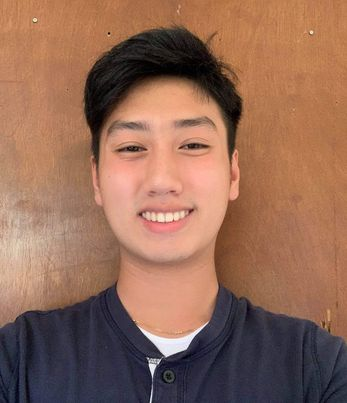
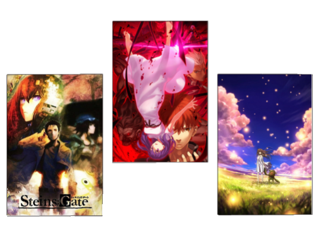
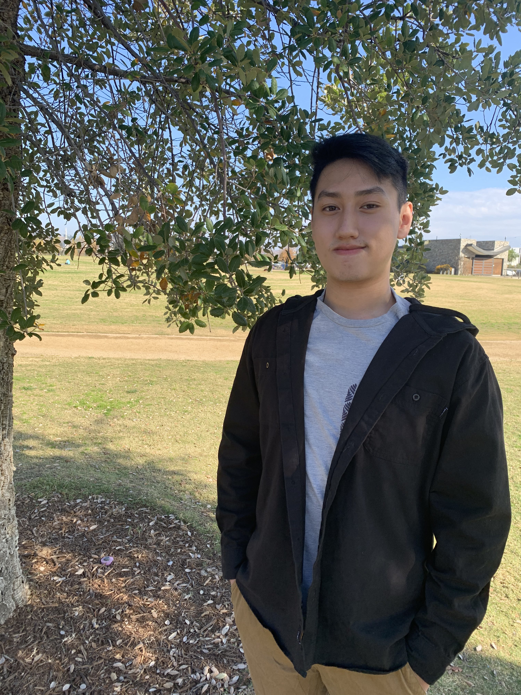

Jeffrey Ethan Nguyen

Undergraduate Student at the University of California, Irvine
The Donald Bren School of Information and Computer Science
Los Angeles, California, United States

About Me
I'm Jeffrey Nguyen, and I'm a student at the Universiy of California, Irvine. I am majoring in Computer Science, specializing in Information. I'm an aspiring Mobile/Web Developer.
I'm what you would call in introvert, and it's apprent in my everday life. I'm much more comforable when I do things on my own or with a small group of friends. Spending time with myself is liberating, as I get to explore and discover things about myself. This is very fulfilling to me as it leads me to think about the things in my life I appreciate and ponder about the purpose of human existence.
Given that I enjoy spending time alone, I've developed this value of individuality; you are the arbiter of your own truth. This is one of the most quintisserntial values I live by, alongside the importance of family and hard work.
I'm a Vietnamese American, though I prefer being called an American as I was born and raised here in the US (Los Angeles), where I share a common culture with many people. However, my sense of belonging to America is very much related to the common culture I share with my parents, tied back to my roots in Vietnam. Hearing stories about my parent's life back in Vietnam had made me become more empathetic and is really the sole effort I strive to succeed; to establish myself as an individual and give back to them, as they have for me for the past 21 years, and in the collective case of my sisters and I, 31 years.
My hobbies and interests include binge-watching anime, playing video games, and eating to my heart's content! A few of my favorite animes include Steins;Gate, Clannad, The Garden of Sinners, and the Fate/stay night franchise. The main game I play and unsuccessfully grind is Valorant. My favorite food cuisines being Vietnamese and Japanese food, though as long as I can get my hands on anything to eat, I have no problems adding it to this list!
My goals in the short term are to graduate from university and earn my degree in my desired major, Computer Science. In the long term, my goal is to get employed in a promising position as a software engineer; whether it be in Google, Microsoft, or even smaller businesses that need my craft! I hope to establish myself financially and give back to my parents (our dream is to own a home), and perhaps even start a family!
